| 日付 | 2018年1月27日（土） - 2018年1月28日（日） |
|---|---|
| メンバー | 家族（妻、長女・6歳、長男・4歳） |
| アクセス | 車 |
昨年に引き続き今年も家族でスキー旅行に行く。
混雑を避けて今年も昨年とほとんど同じ場所、白樺高原国際スキー場を選択。
娘は昨年に引き続きスキー再挑戦、今年は息子も初挑戦させる。
1日目
9時半にスキー場に到着。準備を整えたら早速、娘と息子をスクールに預ける。
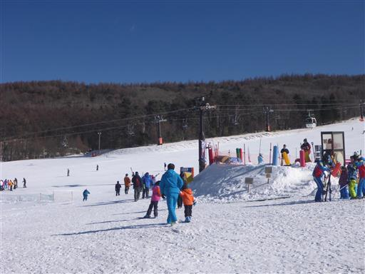
本日は快晴で気持ちが良い。子供たちがいない間は自由に滑ることができる。
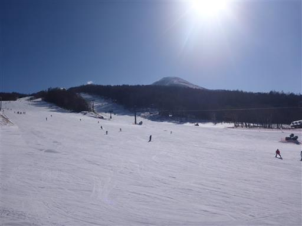
まずは昨年の勘を取り戻せるよう、緩斜面で練習。
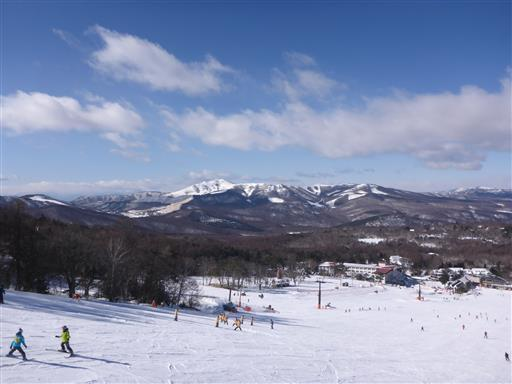
何度か滑ったら少し急斜面のコースに移動。
眼下に見えるのは女神湖、背後の山は美ヶ原だ。
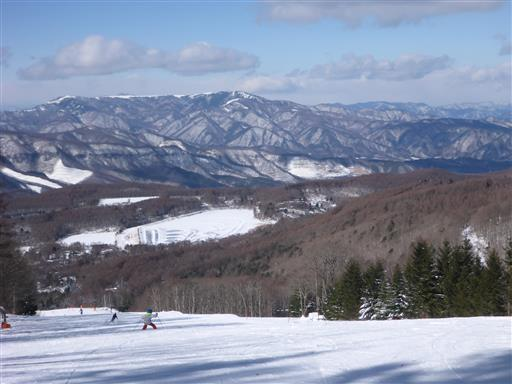
午前の2時間のレッスンを終えたら昼食タイム。
息子は不機嫌で先生におぶってもらっていた…
お腹がいっぱいになってようやく落ち着く。
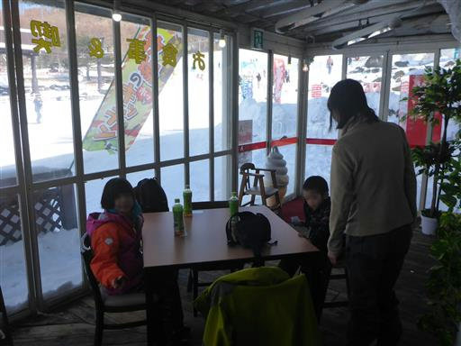
午後のレッスン開始。息子は諦めるかと思ったら意外にやる気だ。

親は午後もフリータイム。ゴンドラ山頂駅からのロングコースを滑る。
山頂駅からは背後の蓼科山がよく見える。ここは蓼科山の登山口でもある。
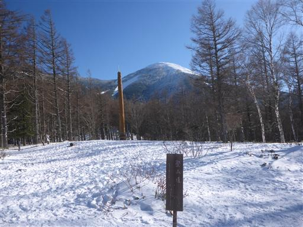
雪と木の影が美しい。
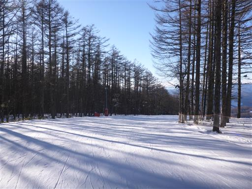
子供たちは熱心にレッスンを受けている。
親が目に入ると甘えだすため、遠くから見守るのみだ。
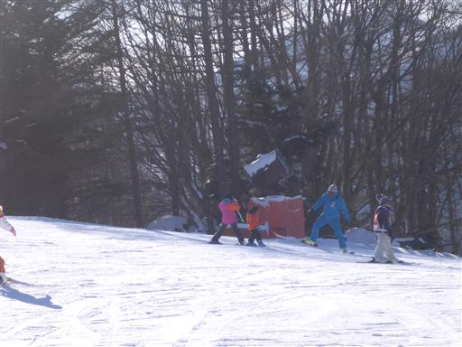
午後のレッスンも無事終了。
娘は停まれるようになり、昨年に比べると大きな進歩だ。
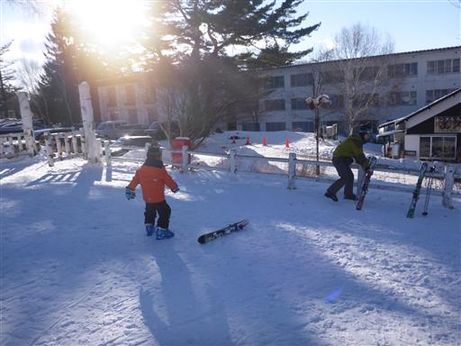
駐車場まで移動。息子はまだ走る元気があるようだ。
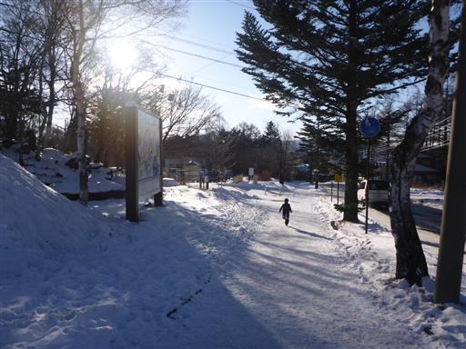
本日の宿はオテル・ド・ミロワール。
スキー場から徒歩でも行ける、立地条件の良いペンションだ。
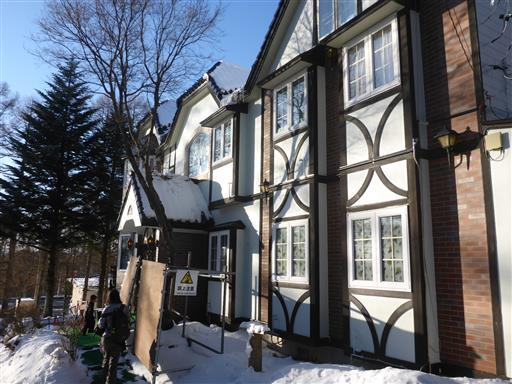
部屋にはロフトがあって子供たちは大興奮。
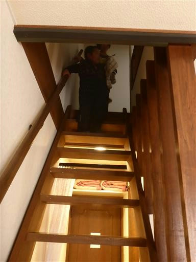
この宿は特に料理が素晴らしい。フレンチのコース料理で一皿ずつ出してくれる。
また一つ素晴らしい宿に巡り合えた。
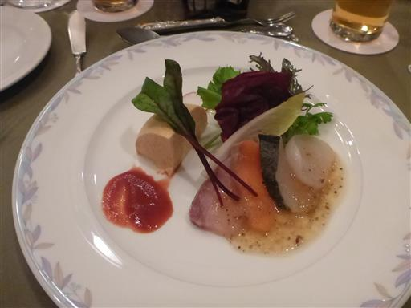
夜は子供たちがロフトで、親が下の部屋で寝ることにしたが、
甘えん坊の息子は結局夜中に怖くなって下に降りてきた…
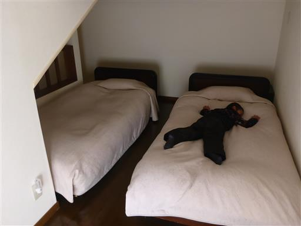
2日目
2日目は家族で滑る。前日の成果を見せる日だ。早速リフトに乗って移動。
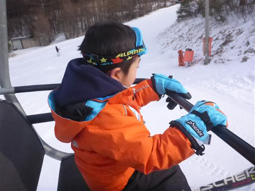
昨日に比べると曇っているが、遠くの景色は良く見えている。
遠くに真白な北アルプスの山々が並んでいる。
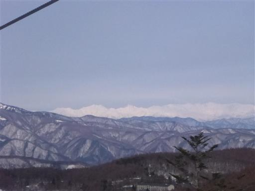
スキー開始。娘は介助なしでもある程度滑れるが、息子は難しいようだ。
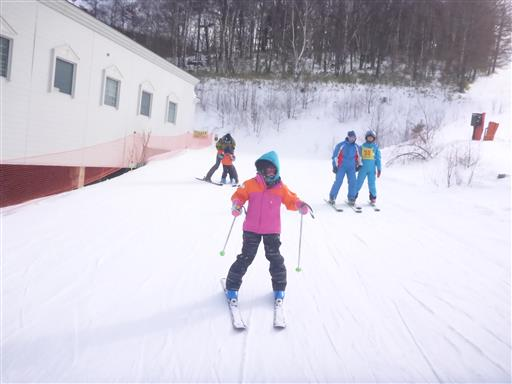
ゴンドラにも乗ってみてロングコースを試してみる。
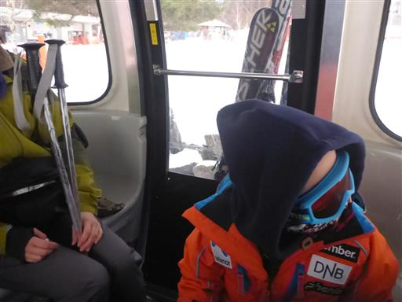
娘は曲がるコツも覚えたようで、林間コースも上手く滑れている。
何度か滑って14時ごろに撤収。
子供たちはスキーが楽しかったようで、当初の最大の目的を果たせたスキー旅行となった。
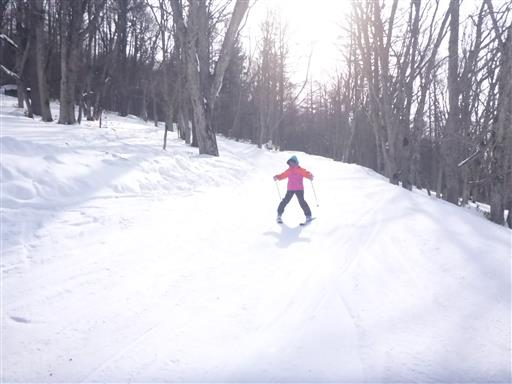